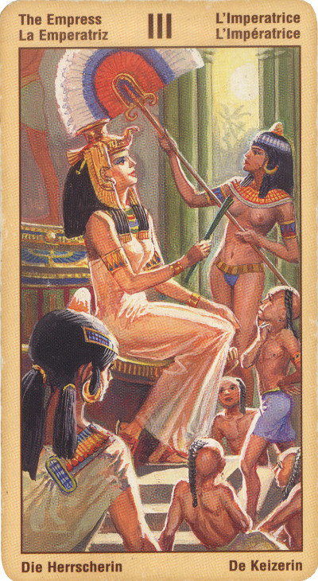

Императрица
Астрологическое соответствие этой карты – Венера.
Это – женщина, познавшая любовь. Но в то же время это и плодородие, физическая и духовная творческая сила, достигшая своего осуществления.
Сидящая на своем троне Императрица - Мать Природа, Повелительница и Хозяйка окружающего мира.
Значение- Венера считается символом любви, искусства и некоторых сумм денег, от маленьких до средних. Отсюда и значение этой карты в раскладе: если спрашивают о делах сердечных, то все замечательно или будет замечательно в самом скором времени. Если речь идет об искусстве, талантах, хорошем вкусе, то она также предвещает успех и радость. И с деньгами тоже будет все в порядке: Венера-Хозяйка не оставляет в беде своих питомцев. В общем, очень хорошая и вполне благоприятная карта, дающая положительный прогноз при ответе практически на любой вопрос.
Еще она может просто указывать на какую-то женщину, играющую некую роль в жизни спрашивающего, чаще всего – любящую или любимую. Или, во всяком случае, настроенную очень благожелательно.
Традиционное толкование этой карты предполагает свадьбу и беременность, однако трактовать эти понятия в данном случае необходимо в самом глубоком и широком смысле слова. Вы можете вынашивать какую-то идею или желание, которое вот-вот проявит себя в реальном мире, также не исключено, что вы начинаете новые отношения или же входите в новый цикл стабильности и изобилия в ваших нынешних отношениях. Императрица вдохновляет вас открыть себя для любви и доверия. Какой бы тяжелой ни была жизнь, повсюду вас окружает благословение Богини и природы, все, что вам необходимо сделать, - это с благодарностью его принять и начать жить страстно и целеустремленно.
Хозяйка - это неисчерпаемая мощь Природы, беспрерывно порождающей новую жизнь. Эта карта обозначает жизненную силу, плодородие, рост и зарождение нового. Она - неиссякаемый источник всякой жизни, нашего творческого потенциала и нашей способности воспринимать тонкие вибрации и воплощать их в форме чего-то нового. На физическом уровне это рост, плодородие, на эмоциональном - творческие способности, на уровне разума - богатство идей, изобретательность, а на уровне сознания - познание нового. Постоянное рождение нового означает как непрерывное изменение нашей жизни, так и необходимость переносить боль, связанную с этим рождением.
С этим арканом связывается понятие воли Творца, закладывающей фундамент всего последующего творения. От жрицы императрице дано понимание процесса творения - в ее власти решать: чему дать и чему не дать самостоятельное существование. Она (императрица) повелевает процессом сотворения, открывая или закрывая невидимой идее дверь в явленный мир.
С картой императрица соотносятся понятие мудрости и глупости, и она соответствует той стадии жизни человека, когда он должен осознать те желания, на основе которых он творит свою судьбу. Поэтому у карты "императрица" есть и второе название - "Осмысление".
Этому аркану соответствует планета практической мудрости и повелительница сотворения - Венера, с которой связана основа всех тайн - величайшая тайна Рождения.
B прямом положении карта императрица символизирует созидание, иногда - женитьбу, или замужество, прибавление в потомстве, успех в творчестве.
Карта матери, порядка в доме. Плодотворность, красота, прогресс. Долгая жизнь и обеспеченность. Хороший брак. Для мужчин - положительное влияние жены. Для женщин - знак хорошей карьеры. Беременным обещает легкие роды. Наличие подруги - покровительницы. Если перед гадающим стоит выбор - совет всегда выбрать интересы семьи. Опека.
Если этот Аркан выпал женщине в личном раскладе, то в ней проявляются лучшие качества, присущие возлюбленной, жене и матери (все зависит от того, в какой роли на данный момент она выступает). Она - прекрасная хозяйка и как никто другой способна придать уют любому жилищу.
В более абстрактном смысле Аркан «Императрица» говорит о наличии у человека большого творческого потенциала и способности реализовать себя в жизни так, чтобы в полной мере проявилось его неповторимое «Я».
В перевернутом виде прогноз остается положительным; такое положение указывает лишь, что в данный момент этому что-то мешает. Но, если рядом нет слишком неблагоприятных карт, то ситуация скоро изменится к лучшему.
Для бизнесменов – прогноз, благоприятный в отношении дел, но требующий задуматься об отношениях с партнером (партнершей).
В перевернутом положении позиция Императрицы может означать домашние хлопоты, материальные затруднения, бесплодие, или желание беременности, трудности в утверждении своего Я, упадок творческих сил.
Отрицательное значение: Себялюбие, колебания, жадность, деспотизм, стремление иметь власть над другими, коварство, ревность. Мачеха. Неразборчивость в связях.
Если вы гадаете на ситуацию, появление Аркана «Императрица» будет означать, что дело уже близится к развязке, и вскоре вы узнаете, к чему привела вас судьба.
Не исключено, что данная карта - знак того, что в деле замешана какая-то дружественная вам женщина, которая по тем или иным причинам взяла вас под свое покровительство.
В особых случаях символизирует скорое замужество или материнство (только при наличии соответствующих Младших Арканов!).
Если карта выпадет в раскладе на мужчину, она может отражать присутствие в его жизни другой женщины, чье влияние на загаданного вами человека очень велико.